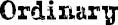

I KNOW I’M not an ordinary ten-year-old kid. I mean, sure, I do ordinary things. I eat ice cream. I ride my bike. I play ball. I have an XBox. Stuff like that makes me ordinary. I guess. And I feel ordinary. Inside. But I know ordinary kids don’t make other ordinary kids run away screaming in playgrounds. I know ordinary kids don’t get stared at wherever they go.
If I found a magic lamp and I could have one wish, I would wish that I had a normal face that no one ever noticed at all. I would wish that I could walk down the street without people seeing me and then doing that look-away thing. Here’s what I think: the only reason I’m not ordinary is that no one else sees me that way.
But I’m kind of used to how I look by now. I know how to pretend I don’t see the faces people make. We’ve all gotten pretty good at that sort of thing: me, Mom and Dad, Via. Actually, I take that back: Via’s not so good at it. She can get really annoyed when people do something rude. Like, for instance, one time in the playground some older kids made some noises. I don’t even know what the noises were exactly because I didn’t hear them myself, but Via heard and she just started yelling at the kids. That’s the way she is. I’m not that way.
Via doesn’t see me as ordinary. She says she does, but if I were ordinary, she wouldn’t feel like she needs to protect me as much. And Mom and Dad don’t see me as ordinary, either. They see me as extraordinary. I think the only person in the world who realizes how ordinary I am is me.
My name is August, by the way. I won’t describe what I look like. Whatever you’re thinking, it’s probably worse.